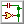

More photos can be viewed on this page.
 When
Sinclair released the original ZX Spectrum in 1982, it was designed with
a chip called the ULA, short for 'uncommitted logic array'. This chip combined
a large amount of logic functions into a single custom-made package, significantly
lowering the component count and cost.
When
Sinclair released the original ZX Spectrum in 1982, it was designed with
a chip called the ULA, short for 'uncommitted logic array'. This chip combined
a large amount of logic functions into a single custom-made package, significantly
lowering the component count and cost.
In modern times, when it costs about as much to buy an old Spectrum as it does to build your own, building a Spectrum based on the original circuit is severely hindered by the fact that these chips were only made for the Spectrum and different versions were used on each PCB revision, making them extremely rare today.
The ULA also generates a lot of heat, so due to being installed without a heatsink and placed into a case with no ventilation (as was done in the original Spectrum), overheating is a common failure point. As a result, most new old stock ULAs have already been used to repair existing machines.
Therefore, it has become something of an art form in electronics to design a Spectrum clone that only uses parts that are still readily available. The most well known example of this is probably the Superfo Harlequin 128, a 100% compatible Spectrum 128K clone built entirely with off-the-shelf parts. The only downside of this design is its high chip count. (61 ICs)
The art of cloning the ZX Spectrum is not a modern concept, however - in fact, it's almost as old as the Spectrum itself! Countries where original Sinclair hardware was difficult to obtain (due to economic tariffs, sanctions, etc.) often had very lenient copyright laws, allowing the existence of domestic industries dedicated to replicating the Spectrum's hardware with the parts available to them. This resulted in computers with a large software base immediately upon release, since only one copy of a program needed to be smuggled into the country for it to be copied and distributed en masse.
The most notable example of this is probably the Soviet Union and surrounding Eastern Bloc. Development of clones in this part of the world began around 1985, with early models consisting of around 50-60 ICs. However, the complexity of these early homemade clones made them expensive and difficult to build and troubleshoot, so they weren't very popular.
In 1988, an electronics engineer from the city of Leningrad named Sergey Zonov developed a Spectrum clone using only 41 ICs, resulting in a clone that was decently affordable, even on the humble average salary of the USSR. This was an immediate success, and computers based on the "Leningrad variant" (later renamed Leningrad-1 to differentiate from the subsequent Leningrad-2) were mass produced for almost a decade, becoming the most popular ZX Spectrum variant in the former USSR.
The USSR used its own naming scheme for ICs, but all the Soviet ICs this computer was designed for have exact Western equivalents. As far as I know, this is still the simplest ZX Spectrum clone to date that doesn't use a programmable logic array in place of off-the-shelf logic.
 The
relative simplicity of the Leningrad-1's design comes at the cost of 100%
compatibility. The majority of software works just fine, but certain programming
tricks that rely on specific hardware timing may not look or sound like
they're supposed to.
The
relative simplicity of the Leningrad-1's design comes at the cost of 100%
compatibility. The majority of software works just fine, but certain programming
tricks that rely on specific hardware timing may not look or sound like
they're supposed to.
Having tested my Leningrad-1 with a decent amount of programs, I'd say 90-95% work with no problems whatsoever, while 97-98% are usable/playable (e.g., no game-breaking glitches).
The composite video output is monochrome, with color video available from a SCART connector (currently not working as of Revision 0) and a DIN-8 connector intended for connection to a custom external video adapter (e.g., VGA).
The commands that are used to play Yamaha AY audio on more advanced Spectrum models appear to conflict with the border drawing circuitry. This results in the border flickering when programs attempt to play AY music.
I have made an effort to make this computer as easy to build as possible. The value of almost every component (excluding pin headers and two connectors) is printed on the silkscreen, so it's possible to assemble the whole thing without having to check the bill of materials.
To aid in ease of construction (and cost reduction), the top and bottom of the static-sensitive system PCB can be protected without having to fabricate a case. The keyboard PCB is designed to mount on top of the system PCB with standard nylon M3 screws and standoffs. Since most PCB fabricators require that you order a minimum of 5 boards per design, you can use one of the spare keyboard PCBs to cover the bottom side of the system PCB.
The keyboard and system PCBs are mounted together with 6 standoffs. The keyboard has an extra 4 holes for standoffs that go through the keyboard and sit on top of the system PCB. These are intended to add structural stability - perfect for fast-paced action games!
 The
ZX Spectrum was designed long before keyboard layouts had been standardized.
In addition, each key corresponds to several BASIC commands, which are
printed on the keys. Unfortunately, nobody makes Cherry MX compatible keycaps
with ZX Spectrum commands printed on them, so you have to make your own.
The
ZX Spectrum was designed long before keyboard layouts had been standardized.
In addition, each key corresponds to several BASIC commands, which are
printed on the keys. Unfortunately, nobody makes Cherry MX compatible keycaps
with ZX Spectrum commands printed on them, so you have to make your own.
I've found that the best way to do this is to order keycaps with removable transparent covers (the same type often seen on point-of-sale terminals) and print out labels to cut out and insert in the keycaps. Such keycaps can be ordered cheaply from eBay or AliExpress under the search term "transparent cover key caps".
The end result is professional-looking (depending on how good your cutting skills are), durable keycaps that won't wear out over time.
A pre-made image of key labels can be downloaded further down the page. I designed it based on a combination of the original Spectrum keyboard and the labels from this Soviet DIY computer kit (which was based on the Leningrad-1).
In total, the keyboard PCB has 40 single width keys in the original ZX Spectrum layout, and one 6.25x width spacebar. To build the keyboard, you'll need:
I'm working on a half-size keyboard that uses small tactile switches as a cheaper alternative, but the mechanical keyboard offers a much nicer typing experience.
 If
you don't already have an (E)EPROM programmer, getting Sinclair BASIC onto
a ROM may be difficult.
If
you don't already have an (E)EPROM programmer, getting Sinclair BASIC onto
a ROM may be difficult.
By default, the Leningrad-1 uses the original Sinclair ROM data burnt onto a 27128 EPROM. It's possible to use some other models of (E)EPROM, usually if the binary is written to the upper 16 KB of the chip.
Some eBay sellers here in the UK sell pre-programmed EPROMs with newer, open source versions of BASIC on them. These usually come with extra components for modifying an original Spectrum to work with EPROMs, but these aren't needed for Spectrum clones.
I have written an in-depth guide on how to get started programming ROMs on this page, with recommendations for what kind of programmer to buy and a list of other chips that can be used in place of the 27128.
The (E)EPROM programming guide also has a collection of alternative BASIC ROMs available for download.
The schematic can be downloaded in PDF form in the Downloads section of this page.
 The
Leningrad-1's tape interface is compatible with original ZX Spectrum tapes,
with the exception that I haven't been able to get fast loading tapes to
work. This usually isn't a problem, since many programs were re-released
multiple times, and there's normally at least one version without fast
loading.
The
Leningrad-1's tape interface is compatible with original ZX Spectrum tapes,
with the exception that I haven't been able to get fast loading tapes to
work. This usually isn't a problem, since many programs were re-released
multiple times, and there's normally at least one version without fast
loading.
Most Spectrum programs are distributed online as TAP or TZX files - these are binary versions of the stream of data from the tape. These files are designed for use primarily with emulators, and loading them onto real hardware can be difficult.
There's a variety of programs available that can convert these files into more versatile standard audio formats. My favorite one is k7zx for Windows, which you can download further down the page. It's a program from 2008, so it should run on Windows versions going back to XP (maybe 2000), and it runs well on my Windows 10 machine. It might also work on Windows 11. (although if you're willingly using Windows 11, I suggest you consult a psychiatrist)
Due to Soviet-era supply shortages, original Leningrad-1 boards were assembled with a variety of different logic types (7400, 74LS00, 74HCT00, etc.) with different switching speeds. Therefore, many fixes were proposed for adjusting signal timing, mostly based on adding capacitors between signal lines and GND. Since Revision 0 was intended partially as a testing prototype, I added as many of these additional components to the PCB as I could. Now I know what works best with 100% 74LS logic (which is much easier to find now than it was in the USSR!) I'll remove the unnecessary components in the next revision, simplifying the PCB and assembly process.
The video signal isn't perfectly compliant to standard PAL/SECAM video timings. Because of this, many TVs and monitors won't be able to display a proper video signal and some displays simply refuse to display anything at all. There are some known modifications for improving video signal compatibility that I'll implement on the next revision.
The tape loading circuit uses a Motorola MC1456 op-amp (the closest equivalent to the Soviet-made КР140УД6). This part has been out of production for decades, and usually sells for a staggering $10.00. There's probably an equivalent op-amp that's still manufactured, but the whole tape loading circuit can be simplified significantly; the Leningrad-1 tape loading circuit uses 2 ICs and 11 discrete components, but the tape loading circuit on the Leningrad-2 achieves the same functionality with only 1 IC and 4 discretes.
I haven't been able to get the Kempston joystick interface to work. In some games the character moves in the wrong directions, while in some games the joystick does nothing at all. Some sources say that the Leningrad's joystick interface is inherently flawed, and suggest ways of improving it. However, the best solution may be to ditch the Kempston interface altogether and implement a Sinclair interface instead. The Sinclair interface is mapped directly to the keyboard, so there's not much to go wrong since the keyboard works fine.
The SCART connector is too far to the right side of the PCB. It turns out some SCART connectors have brackets on the sides, which overlap with one of the standoffs used to mount the keyboard onto the system board.
The guide I found for connecting the Leningrad-1 to a SCART cable said to leave pins 17 and 21 disconnected. This seems to have been a mistake, as pin 17 is used as a ground for the sync signal (pin 20).
The audio output is too loud, which usually results in an extremely coarse volume control on whatever it's plugged into. This could be fixed by adding a resistor in series with the audio output.
 If
you want to build your own Leningrad-1, you'll need some files for making
the PCB and keyboard labels.
If
you want to build your own Leningrad-1, you'll need some files for making
the PCB and keyboard labels.
 Bill of Materials
Bill of Materials
XLS spreadsheet, 29.0 KB - A list of all
the components you'll need to build the computer. I recommend installing
the parts highlighted in green, and not installing the parts highlighted
in purple and blue.
 Bill of Materials
Bill of Materials
PDF document, 115 KB - A list of all the
components you'll need to build the computer. I recommend installing the
parts highlighted in green, and not installing the parts highlighted
in purple and blue.

Keyboard Schematic
PDF document, 16.3 MB - My schematic for
the keyboard.
System Schematic
PDF document, 3.07 MB - My mostly annotated
schematic for the Leningrad-1.
 Keyboard PCB Gerbers
Keyboard PCB Gerbers
ZIP archive, 326 KB - PCB for a Cherry MX
compatible keyboard with spacebar.
 System PCB Gerbers
System PCB Gerbers
ZIP archive, 1.32 MB - The PCB for the computer
itself.
 Keyboard Label Sheet
Keyboard Label Sheet
PNG image, 718 KB - Keyboard labels for printing.
Measure how much space is under the keycaps before printing - there's a
DPI guide on the image to aid in getting the labels to be the right size.
Make sure to cut out the labels around the inside of the black outlines.
 Sinclair BASIC ROM
Sinclair BASIC ROM
BIN data, 16.0 KB - Original 1982 Sinclair
48K BASIC.
 These
extra downloads are mainly for those who want to modify the files seen
above.
These
extra downloads are mainly for those who want to modify the files seen
above.
 ZX Spectrum Software - WAV Audio Starter Pack
ZX Spectrum Software - WAV Audio Starter Pack
ZIP archive, 24.6 MB - A collection of Spectrum
software pre-converted to WAV audio. Please note that the total uncompressed
size of this archive is 392 MB!
 Keyboard PCB KiCad Files
Keyboard PCB KiCad Files
ZIP archive, 2.90 MB - Useful if you want
to make modifications to the keyboard PCB. Made with KiCad 8.
 System PCB KiCad Files
System PCB KiCad Files
ZIP archive, 3.56 MB - Useful if you want
to make modifications to the system PCB. Made with KiCad 8.
 Keyboard Label Sheet
Keyboard Label Sheet
GIMP XCF image,
5.24 MB - Useful if you want to design your own keyboard labels.
 Leningrad-1 Logo (19890 x 3148 px, Transparent) (With USSR Quality Mark)
Leningrad-1 Logo (19890 x 3148 px, Transparent) (With USSR Quality Mark)
PNG image, 752 KB - The logo seen at the
top of the page in full resolution.
 Leningrad-1 Logo (19890 x 3148 px, Transparent) (Without USSR Quality Mark)
Leningrad-1 Logo (19890 x 3148 px, Transparent) (Without USSR Quality Mark)
PNG image, 602 KB - The logo seen at the
top of the page in full resolution.
 Custom Fonts
Custom Fonts
ZIP archive, 338 KB - Custom fonts used for
the KiCad files and XCF label sheet. Only needed if you want to modify
these files.
Other Schematics
ZIP archive, 8.87 MB - Leningrad-1 schematics
from other sources. Note that these will contain differences to my version
of the schematic and PCB.
 k7zx 4.3
k7zx 4.3
ZIP archive, 1.00 MB - A handy Windows utility
for converting TAP/TZX Spectrum emulator files into playable WAV/MP3 audio.
It can also be downloaded here.
Last updated on Mar 2, 2025.
This page was first uploaded on Mar 2, 2025.
{kind=link}
{kind=link}
{kind=link}
{kind=link}
{kind=link}